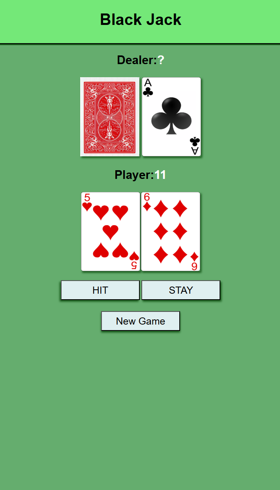
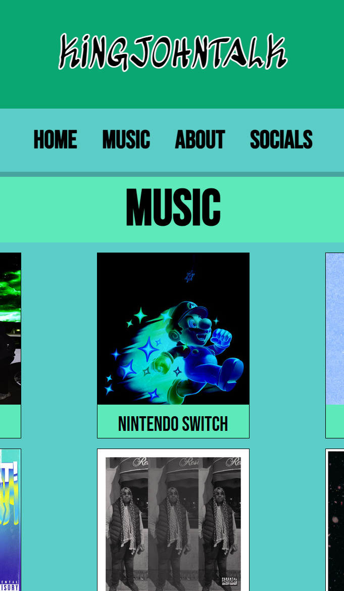

Black Jack - in JavaScript
This is the game of BlackJack working on a web browser due to it being written in JavaScript.
It was made during the same time as 'Black Jack - in Python' as two different school projects.
So it was a fun experience writing the same game in two very different languages.
You can play it here on my portfolio using the button below!

Website for an Artist (KingJohnTalk)
This is a website I made for a friend from school. He is an artist and I wanted to make a website for him as my "gymnasiearbete" (A very important project in swedish high school.) This project uses all the web languages I learned in school, HTML, CSS, JavaScript, PHP with database and SQL. This was easily my biggest project during school, it might still be my biggest project to this day. With thousands of lines of code.
